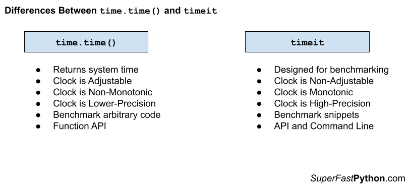

time.time() vs timeit in Python
You can use the time.time() function to access the system time. The timeit module can be used to benchmark ad hoc snippets of Python code.
The time.time() function should probably no longer be used for benchmarking Python code because it uses a clock that is adjustable, non-monotonic, and low precision. Instead, the time.perf_counter() function can be used, or the timeit module.
The sweet spot for the timeit module is benchmarking snippets. It is probably not appropriate for benchmarking entire programs or more complicated code across many functions or objects, in which case the time.perf_counter() function can be used instead.
In this tutorial, you will discover the difference between the time.time() and timeit and when to use each in your Python projects.
Let's get started.
What is time.time()
The time.time() function reports the number of seconds since the epoch.
Return the time in seconds since the epoch as a floating point number.
-- time — Time access and conversions
Recall that epoch is January 1st 1970, which is used on Unix systems and beyond as an arbitrary fixed time in the past.
In computing, an epoch is a fixed date and time used as a reference from which a computer measures system time. Most computer systems determine time as a number representing the seconds removed from a particular arbitrary date and time. For instance, Unix and POSIX measure time as the number of seconds that have passed since Thursday 1 January 1970 00:00:00 UT, a point in time known as the Unix epoch.
-- Epoch (computing), Wikipedia.
The result is a floating point value, potentially offering fractions of a second (e.g. milliseconds) if the platforms support it.
The time.time() function is not perfect.
It is (theoretically) possible for a subsequent call to time.time() to return a value in seconds less than the previous value, due to rounding.
Note that even though the time is always returned as a floating point number, not all systems provide time with a better precision than 1 second. While this function normally returns non-decreasing values, it can return a lower value than a previous call if the system clock has been set back between the two calls.
-- time — Time access and conversions
This may make the time.time() method of benchmarking code appropriate for code that has a generally longer execution time (e.g. seconds) rather than short execution times, e.g. less than a second or less than 500 milliseconds.
You can learn more about the time.time() function in the tutorial:
Now that we are familiar with time.time(), let's take a look at timeit.
What is timeit
The timeit module is provided in the Python standard library.
It provides an easy way to benchmark single statements and snippets of Python code.
This module provides a simple way to time small bits of Python code. It has both a Command-Line Interface as well as a callable one. It avoids a number of common traps for measuring execution times.
-- timeit — Measure execution time of small code snippets
The timeit module provides two interfaces for benchmarking.
- API interface.
- Command-line interface.
The first is an API that can be used via the timeit.Timer object or timeit.timeit() and timeit.repeat() module functions.
The second is a command line interface.
Both are intended to benchmark single Python statements, although multiple lines and multiple statements can be benchmarked using the module.
Importantly timeit encodes a number of best practices for benchmarking, including:
- Timing code using time.perf_counter(), for high-precision.
- Executing target code many times by default (many samples), to reduce statistical noise.
- Disabling the Python garbage collector, to reduce the variance in the measurements.
- Providing a controlled and well-defined scope for benchmarked code, to reduce unwanted side-effects.
Note By default, timeit() temporarily turns off garbage collection during the timing. The advantage of this approach is that it makes independent timings more comparable.
-- timeit — Measure execution time of small code snippets
The timeit module is intended to benchmark small amounts of code that run very fast.
Class for timing execution speed of small code snippets.
-- timeit — Measure execution time of small code snippets
It is generally not intended for benchmarking entire programs, although it can.
The interface is designed to take a single statement of Python code.
It is also generally not intended for benchmarking slow code, e.g. that takes seconds, minutes, or longer to run, although it can.
The benchmarking uses a high-precision timer that reports process time and executes a given statement one million times by default to expose the runtime signal of very short-duration target code.
You can learn more about how to use timeit in the tutorial:
Now that we are familiar with the time.time() and timeit, let's compare and contrast each.
Comparison of time.time() vs timeit
Now that we are familiar with the time.time() and timeit, let's review their similarities and differences.
Similarities Between time.time() and timeit
Both the time and timeit modules are part of the Python standard library.
The main similarity between time.time() and timeit is as follows:
- Both time.time() and timeit can be used to benchmark Python code.
We can use the time.time() function to record the start time before a piece of code and the end time at the end of a piece of code. The difference between these two times can be reported as the benchmark time.
The timeit module can be used via the command line interface or the Python API to benchmark a snippet of code many times and report statistics.
Differences Between time.time() and timeit
The time.time() function and timeit module are also quite different, let's review some of the most important differences.
- Objective. The object of the time.time() function is to report the system time whereas the objective of timeit is to benchmark code snippets.
- Scope. The benchmark scope of the time.time() is arbitrary, whereas the benchmark scope of timeit is limited to code snippets.
- Interface. The interface for the time.time() is the function API, whereas timeit provides both a function and class API as well as a command line interface.
Let's take a closer look at each one of these differences in turn.
Differences in Objective
The objectives between time.time() and timeit differ.
The objective of the time.time() function is to report the system time, the time since epoch.
Return the time in seconds since the epoch as a floating point number.
-- time — Time access and conversions
We can use the time.time() to benchmark code, although this is not the primary objective of the function.
As such, some of the limitations of the time.time() may make it inappropriate for benchmarking Python code, such as :
- The system clock used by time.time() is adjustable, meaning that the time may be updated manually or automatically at any time.
- The times returned from time.time() are non-monotonic, meaning it is possible for the clock to return a time in the past.
- The times returned from time.time() may have a lower relative precision.
On the other hand, the goal of the timeit module is to benchmark Python code.
Given this goal, it provides multiple interfaces for benchmarking.
It also internally makes use of a different time function that uses a high-resolution clock that is more appropriate for benchmarking.
Specifically, internally, it makes use of the time.perf_counter() function by default.
The default timer, which is always time.perf_counter(), returns float seconds.
-- timeit — Measure execution time of small code snippets
This function is preferred for benchmarking for 3 reasons:
- The clock used by time.perf_counter() is not adjustable, meaning it cannot be changed manually or automatically.
- The times returned from time.perf_counter() are monotonic, meaning each time returned will be equal to or greater than the last time retrieved.
- The times returned from time.perf_counter() have a high-relative precision, using a system clock with the highest precision available.
You can learn more about the perf_counter() function in the tutorial:
Differences in Scope
The scope between time.time() and timeit differ.
The time.time() function can be used to benchmark Python code at almost any reasonable scope, such as:
- Statement
- Function
- Object
- Program
The scope is limited by our manual calling of the time.time() function.
On the other hand, the scope of the timeit module is limited to benchmarking one snippet of code.
This module provides a simple way to time small bits of Python code.
-- timeit — Measure execution time of small code snippets
This is one line of code, such as one statement or one function call.
It is possible to stretch this capability by providing setup code and benchmarking a compound statement.
Differences in Interface
The interfaces between time.time() and timeit differ.
The interface for the time.time() is just the function call.
More elaborate interfaces are possible, but they must be developed. Common examples include:
- Helper benchmarking function
- Helper benchmarking context manager
- Helper benchmarking decorator
But none of these are provided out of the box.
On the other hand, the timeit module provides two interfaces.
- An API interface including module functions and Python objects.
- A command line interface for ad hoc benchmarking.
The command line interface is particularly helpful for benchmarking ad hoc snippets of code, much like profiling Python programs via the profile and cProfile modules in the standard library.
Summary of Differences
It may help to summarize the differences between time.time() and timeit.
time.time()
- Returns system time.
- Clock that is adjustable, non-monotonic and low-precision
- Benchmark arbitrary Python code.
- Function API
timeit
- Module designed for benchmarking
- Clock that is non-adjustable, monotonic and high-precision
- Benchmark code snippets.
- Function and Object APIs and Command Line Interface
The figure below provides a helpful side-by-side comparison of the key differences between time.time() and timeit.

When To Use time.time() and timeit
When should you use time.time() and when should you use timeit, let's review some useful suggestions.
When to Use time.time()
- When we need to report the system time, e.g. consistent with another program.
- When the program runs in an environment before time.perf_counter() was developed, e.g. prior to Python v3.3.
Don't Use time.time() for Benchmarking
Generally, the time.time() function should no longer be used to benchmark Python code.
This is for 3 main reasons:
- The clock used by time.time() is adjustable.
- The clock used by time.time() is non-monotonic.
- The clock used by time.time() may have relatively lower precision.
An alternative function that offers as much flexibility as time.time() should be used, such as the time.perf_counter() function.
Alternatively, the timeit module can be used for benchmarking.
When to Use the timeit
- When you need a high-precision timer for benchmarking snippets Python code.
The sweet spot for the timeit module is in the ad hoc benchmarking of code snippets.
Don't Use timeit for Benchmarking More Complicated Code
The timeit module is probably cumbersome when benchmarking larger more complicated code, such as:
- Entire programs
- Across function calls.
- Across Objects and method calls.
You might be able to force timeit to work by providing setup code and/or defining custom functions that capture the target code to benchmark.
Nevertheless, it may be simpler to use the time.pref_counter() function directly.
Takeaways
You now know the difference between time.time() and timeit and when to use each.